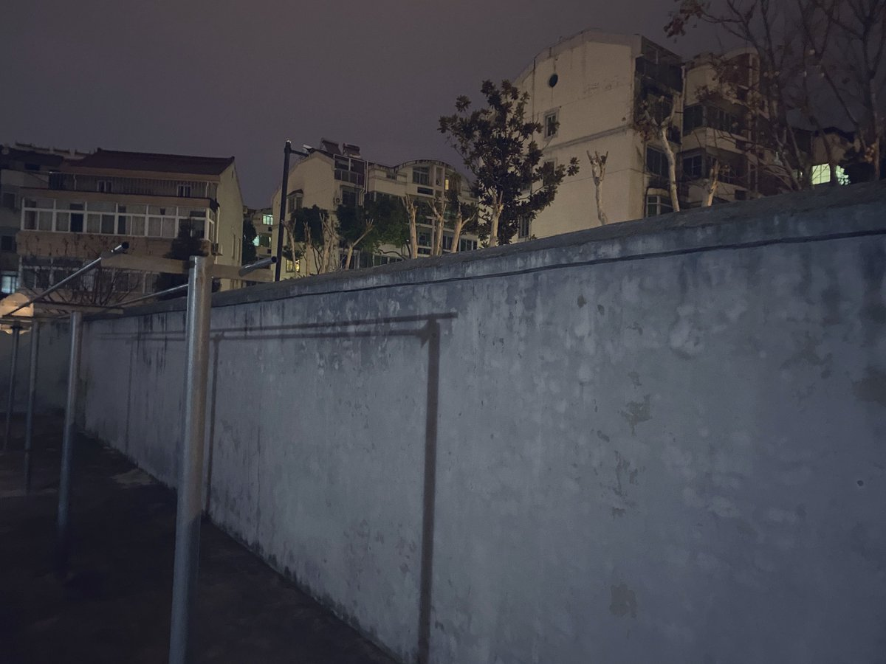

对2026年春节后有实感的日子也许不到两个月 奇怪的是每个月干了什么 新听了哪些专辑 看了哪些书都能串起来 我创作的井喷式爆发期一直持续到了梅雨季节前 并且即将度过一个相对“危险”的精神状态而言平安的夏天 至少比去年平安多了 我在冬夏两季格外容易发病 摸清这个规律后我都不太想多刺激自己


视奸了一下曹丹平的微博主页还是发现了一些好东西的 上次刷微博还是今年年初在前女友那 我总是把当时租的房子楼下一堵隔开道路和小区的低矮土墙称为“柏林墙” 这么叫多半因为搬到当时女友的城市看了西德电影堕落街 印象里25年末到今年春节天一直灰蒙蒙的 电影色调也雾蒙蒙像霾一样 https://t.co/E14AnBJAUQ